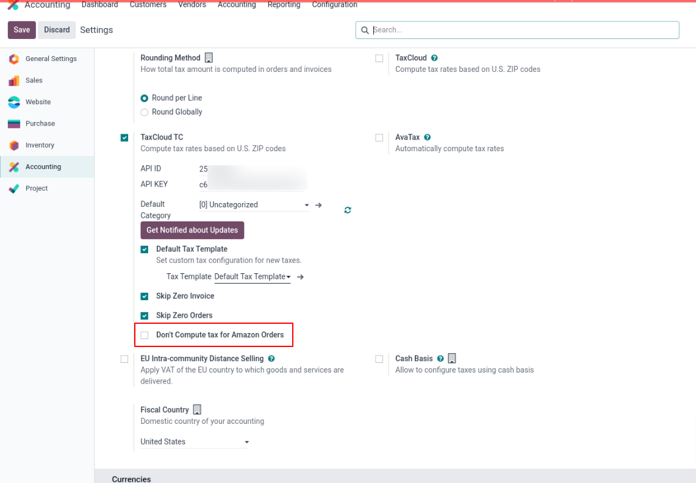
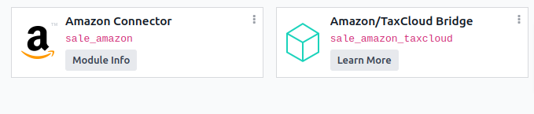

Amazon/TaxCloud Bridge
Description
This module integrates Odoo
with TaxCloud. From Odoo 17, new installations are prohibited, and from
Odoo 18, the TaxCloud module(s) won’t exist at all. This module allows it to
be installed as if it were officially supported by TaxCloud.
The connector bridges Odoo and TaxCloud, ensuring a seamless and efficient tax
calculation process for Amazon orders.
Module Installation
- Users must download all the official TaxCloud modules listed
below from the Odoo Apps Store before proceeding with the installation process, even if
they don’t use the related Odoo TaxCloud modules. This ensures they get all the TaxCloud features
and proper data transmission. If they use “Deploy on Odoo.sh”
in the Apps Store, they must deploy all the modules listed below.
- For example, suppose users have not installed the Subscription
app but have installed the Sales app. In that case, they are still recommended to download all the
official TaxCloud modules before installing the “Account
TaxCloud” module. The “Account
TaxCloud - Sale” modules are installed based on the installed modules
list. In the future, installing the Subscription app will automatically install the needed “TaxCloud and Subscription” module. This ensures
they do not miss any of the TaxCloud features.
- Users did not use the Odoo TaxCloud Modules:
- If users are not currently using the Odoo module, they
can install this module by simply clicking the “Activate” button and following the configuration
steps below.
- Using Odoo TaxCloud Modules:
- Switching from the Odoo TaxCloud module to our
connector in odoo V17
- If users are currently using the Odoo TaxCloud module,
then they should not uninstall the current
module before installing this module; otherwise, they will lose all of their data. This module will take
care of the configuration & data transmission from the existing
module and automatic uninstallation of the Odoo TaxCloud module once
installed. It is not necessary to reinstall the Odoo TaxCloud module.
- Migrating from Odoo 17 to Odoo 18 or from Earlier
Versions to Odoo 18
- Migrating from Odoo 17 to Odoo 18
- First, switch to the official connector in Odoo 17 to
prevent data loss. Then, proceed with the migration to Odoo 18 using our connector.
- Migrating from earlier versions to Odoo
18
- First, migrate to Odoo V17 using our official connector.
Then migrate to Odoo 18 to ensure all data is retained.
- Alternatively, the module can be installed directly in
Odoo 18 as a fresh installation and configured from scratch.
For any technical queries or support, contact us at 📧taxcloud@sodexis.com or visit the website at 🌐sodexis.com/taxcloud. Free support for the installation to the first few customers will be provided.
Configuration
The technical and functional configurations are detailed in the “Account
TaxCloud” document. Please refer to the documentation for any questions regarding TaxCloud.
If the boolean “Don’t Compute tax for Amazon
Orders” is enabled, the tax for the sales order made from Amazon will not
be computed.

Functionality
This module will not be installed
automatically but installed while installing the Amazon Connector module.

If the invoice is made from an Amazon order, TaxCloud won’t recompute tax on the invoice even though all the conditions are met since
Amazon computes tax from its end.
This module skips the tax computation for Amazon orders alone.
Document Version: 1.0
Credits
Contributors
For additional information or inquiries regarding TaxCloud, feel free to reach out
to us at
Sodexis <📧taxcloud@sodexis.com> or visit our
website at <🌐sodexis.com/taxcloud>
This module is maintained by Sodexis.